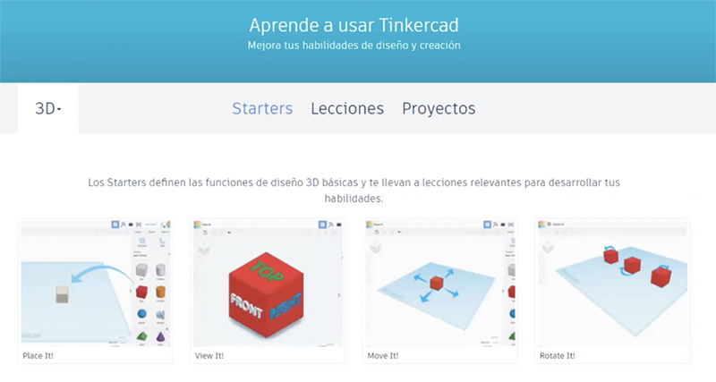
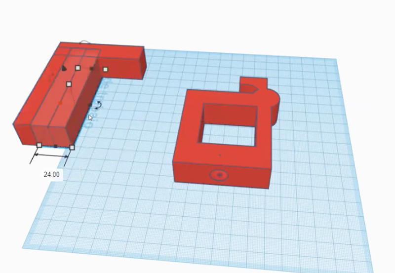
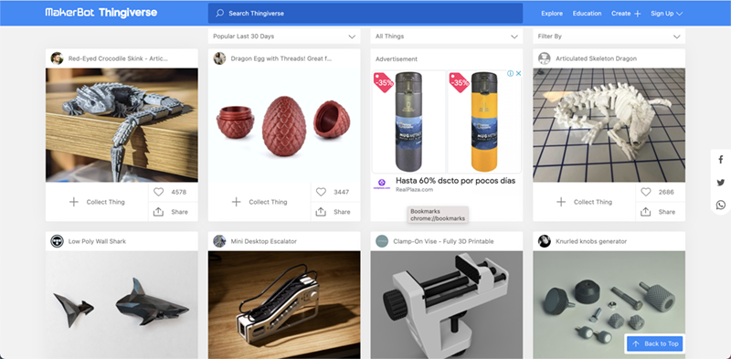
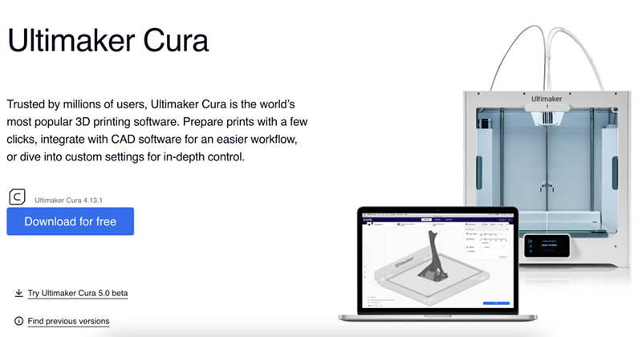
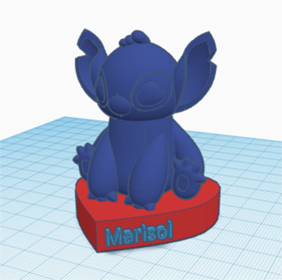

Sesión 06: Ultimaker Cura y Tinkercad
*Esta clase ha sido duplicada debido a que perdimos varias clases debido a feriados y para evitar confusiones con la numeración de semanas.
Para esta sesión, la profesora nos pidió entrar a Tinkercad, una plataforma online bastante útil para hacer diseños 3D y sirve para modelar algunas piezas de forma básica. Nos hizo una pequeña y rápida introducción de cómo se usa para recordar lo que aprendimos en Laboratorio de innovación 1, ya que para este promedio 2, dijo que haríamos full diseños y modelados de nuestro proyecto.

Tinkercad

Demostración del uso de Tinkercad
Esta plataforma es fácil de utilizar y tiene lo básico que necesitamos, pero nos nombró otros softwares que también tenían la misma función, y algunos compañeros las utilizaban, como por ejemplo:
- Sketchup
- 3D max
- Blender
- Rhino
Luego nos indicó que entremos a Thingiverse y busquemos un modelo de 3d que más nos guste y lo descarguemos. En mi caso, elegí una cabeza de Stich y me lo descargué (El formato en el que se descarga es stl).

Thingiverse
Cabeza de Stitch
Pero, para abrir el diseño 3D que habíamos descargado, tuvimos que descargarnos "Ultimaker Cura"

Ultimaker Cura
Y una vez ya descargado:
- Abrimos el Ultimaker.
- Arrastramos nuestro diseño 3D al programa.
- Agregamos la impresora "Artillery Genius" para estar todos iguales.
El stitch que elegí fue diseñado para no necesitar un soporte, es decir para que este se puede imprimir de una sola vez, de abajo hacia arriba. Si vamos a vista previa, podemos ver como se imprimiría la pieza. Lo naranja es el relleno de la pieza.
Diseño 3D al programa
Seleccionar Artillery Genius
Luego, volvimos a Tinkercad e importamos nuestro diseño de Ultimaker Cura. Después practicamos un poco con las herramientas de Tinkercad

Importé el Stitch a Tinkercad y jugamos con otros elementos de la plataforma
Nos agrupamos en salas para avanzar con el prototipo de nuestro proyecto de arduino. En nuestro caso, un "Dispensador de comida para mascotas". Quisimos avanzarlo en Tinkercad
Diseño 3D del prototipo del proyecto
Dentro del diseño estará todo el contenido del arduino para que este funcione. Le pusimos "Winnie" que es nombre de un perrito de las integrantes del equipo, y al otro lado una patita de perro para decorarlo.Y en la parte de arriba, la semiesfera funcionará como tapa para meter la comida.